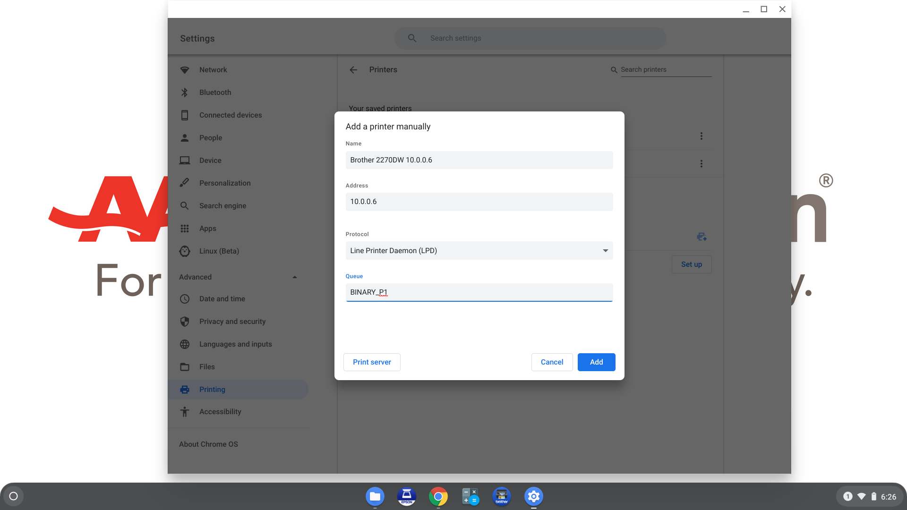

Click on the icon at the bottom right corner of the screen:

Click on the gear icon:

Click "Advanced":

Click "Printing":
Click "Printers":

Click the icon to the right of "Add Printer":
Fill in a name for the printer; it's a good idea to include the IP address in the name, either 10.0.0.2 or 10.0.0.3 (on a label on the printer). Fill in the address to match. Then click "Add".

You should see the new printer in the list.

Fill in a name for the printer; it's a good idea to include the IP address in the name, either 10.0.0.5 or 10.0.0.6 (on a label on the printer). Fill in the address to match. For "Protocol", choose "Line Printer Daemon (LPD)"; for "Queue" type in "BINARY_P1". Then click "Add".
In the Advanced printer configuration, set "Manufacturer" to "Brother" and "Model" to "Brother HL-2250DN". Click "Add".

The printer should now show up in the list of saved printers.